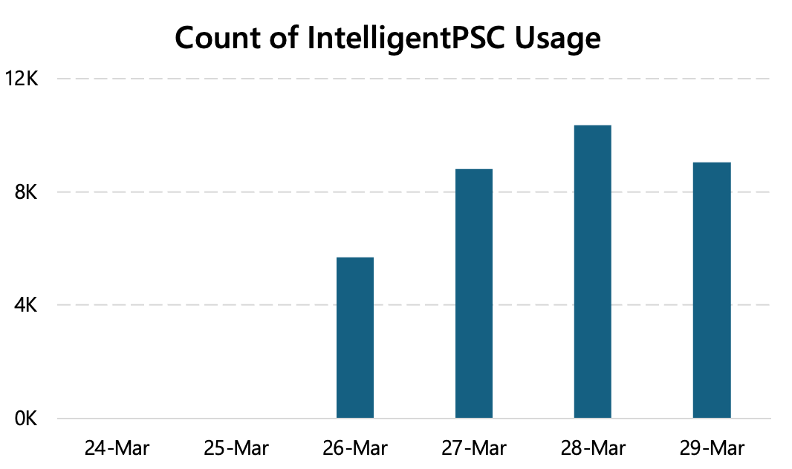
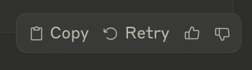

Associate Teaching Professor
Carnegie Mellon University
Let's say we just deployed a new AI feature. How do we know when its usage is successful or not? Our offline benchmarks show promising results but you never know how it will go with actual humans. We want to log when it fails our users so that we can improve the model.
Obviously, we can start by just counting the feature invocations! If people use it, then it must be working, right?
One of our features at Microsoft years ago was seeing decent usage rates as soon as we released it to a small cohort. They were using it multiple times too! But when we started logging more data to understand how it was being used, we found that users were accepting the AI suggestions and then immediately undoing them. That is not good. Repeated usage actually meant it was failing because the first attempt wasn't good enough.
So just looking at usage doesn't tell us how it is being used or whether it is working. More importantly, it doesn't give us scenario data to improve the models.
This is a hard problem because there is a lot of data that could be logged. Privacy and scale prevent you from simply logging everything though. We couldn't just send users' raw data back to our servers. So what indicators can be detected client-side to know when a scenario goes well or goes bad?
A lot of products simply ask the user how things went. You've likely seen AI chat interfaces that display a thumbs up or down. Other products provide an open-ended textbox or show a survey.
However, only a single-digit percentage of users interact with these. The data are biased, noisy, and I didn't find the open-ended responses to have much insight.
When AI suggestions are rejected: Log the rejected suggestions and capture what users do instead as the ground truth. This provides a 3-tuple: the input into the model, the output from the model (the rejected suggestion), and what the user did instead. It is difficult to do this for open-ended tasks, though it is easy for things like one-line code completion. This is particularly useful in conjunction with shadow evaluations.
When AI suggestions are accepted: Track what the users do after with that content. Store metadata with AI-generated content, then log any future events on that content. Do they delete it shortly after? Undo it? Copy-paste it? Modify it? If they keep it for a while, it was probably good. If they make minor edits, then it could have been better. This can require considerable infrastructure to track the metadata (e.g., the ability to track regions of text in a code editor and know when it is modified) but it is invaluable.
At the end of the day, we usually can't know if the AI worked or failed for the user with 100% certainty. But we can certainly improve the model and benchmarks from user behavior.
Read more of my posts about AI: